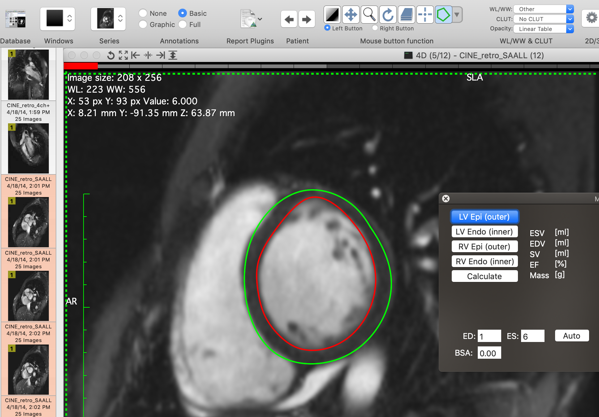

Description:
Cardiac MRI plugin - calculate end diastolic, end systolic and stroke volumes, ejection fraction and cardiac mass from cardiac MRI CINE data.
- Choose volumetric CINE MRI data and run the plugin
- Draw contours, label them as Left/Right Ventricle Epi/Endocardium using plugin buttons
- Calculate the results
Please consider citing my work
My google scholar
An article about MRHeart
DOI of the software
Tutorial
Tutorial on youtube
Version: 0.9.3
Details: On my web site
Contact: konradwerys2@gmail.com
Screenshot:
